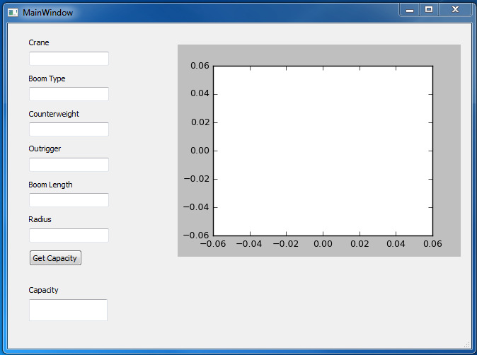

I started this project to eliminate manual copying of information from one excel sheet to another. This step is part of the process of creating lift plans so I will describe the process in full to give context to the situation.
The process for creating a lift plan is as follows:
The manual copying of information from the coversheet to the tally block sheet took time and lead to errors in the middle of the process. This would result in having to redo the tally block sheet and all the steps after, costing a large amount of time
I solved this issue by learning VBA, writing a macro to automatically copy the latest tally block workbook to the job folder, select the correct worksheet, rename the workbook and fill in the appropriate worksheet.
The result has been a large decrease in errors on the drawings and time savings from the elimination of errors that would force repeating steps in the lift plan process.
The code is available to view on Github.
I started this project to automate looking up crane capacities. The process of looking up crane capacities for each lift would involve using information on the Excel cover sheet to find the capacity in a 3" binder full of charts for every configuration of every crane in the fleet. This is a very tedious process that can take a lot of time since each lift plan typically involves 10+ lifts and all lifts have to be rechecked anytime the crane moves. The crane position in a lift plan will typically change twice. This means I look up capacities 20+ times for each lift plan and manually enter the data into the coversheet.
I automated this process by creating a python script to take advantage of the freely available modules for it. The capacity information for each crane is entered into a sqlite database. The python script uses the xlwings module to pull the information needed from the Excel coversheet, then uses the sqlite module to query the database and fills in the capacity cell on the coversheet for each lift using the information from the database.
The result is a process that saves several minutes every time capacities are looked up and eliminates data entry errors. The elimination of data entry errors saves a huge amount of time since any error requires the lift plan to be redone.
The code is available to view on Github, it's the xlCapLookUp.py file in this repository.
A byproduct of the Excel capacity look up project is the GUI program I created to look up crane capacities using the database already
created for the above project. The user enters the information in the text boxes and the program will query the database to find the
capacity of configuration for that crane and return it in the GUI. This program could allow others to use the program to easily look up crane capacities without the
3" binder and the GUI could be upgraded withs graphs to help in sizing cranes for jobs.
The GUI:
